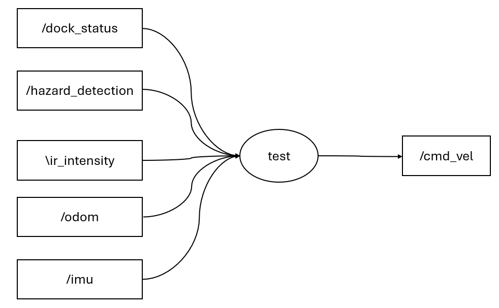

Implementing a PID controller on Irobot Create for wall following while mapping the space
A Brief Synopsis
For this project, Robotic Operating System (ROS 2, distro = ‘humble’) is used to implement room mapping through Irobot Create. The documentation for the Irobot Create ROS structure can be found here and the Ros2 documentation can be found here. A traditional pub sub method is used to communicate with the Irobot.
Following is the list of topics used to communicate with the robot:
Subscribed
- DockStatus: irobot_create_msgs.msg // checking if the Irobot is docked
- HazardDetectionVector: irobot_create_msgs.msg // get a list of hazards
- IrIntensityVector: irobot_create_msgs.msg // get the reading from the 7 IR sensors
- Imu: sensor_msgs.msg // get the X and Y coordinate of the Irobot
Published
- Twist: geometry_msgs.msg // send the velocity commands to the Irobot
All of these communications occur through the designed node. Rqt graph of the pub-sub structure used is shown below:

1. Designing the controller for wall following:
I. Bang - Bang controller
For the first try, a simple bang bang controller is designed which takes in the Ir sensor readings and descides the angular velocity based on hardcoded limits on the intensities. The implementation is done in the “test” node which can be run by doing “ros2 run controller new”. Following is the algorithm put to use:
- Get the IR sensor readings.
- Mode 1: If the max intensity of 3 IR sensors from left is higher than 100, move closer to the wall with anglular velocity of 0.2.
- Mode 2: If the max intensity of leftmost sensor is less than 10, move closer to the wall with angular velocity of 0.4.
- Mode 3: If any IR reading is greater than 350, find the respective sensor. If the sensor if in the left [0:3] then move to the right with angular velocity of -0.6.
Despite working properly, the controller isnt’t precise at all and is extremely slow. Increasing the linear speed would mess up the logic. Accordingly, its not adequate.
II. PID controller
For the second try, a PID controller is implemented to keep the intensity of the leftmost IR sensor at 70 (setpoint). Accordingly, the error is determined and is processed as follows:
\[ u = K_p * error + K_i * \int error \,dt + K_d * \frac{d(error)}{dt} \]
The gains are tuned manually using the Ziegler–Nichols method. While setting K_i, and K_d to 0, the proportional gain K_p is increased untill oscillation is observed. Following this, the K_I is increased to decrease the oscillation. Since the IR sensor is noisy, very small K_d is used to provide braking action on the controller. It is observed that without K_d, the Irobot has a little difficulty in manuvering tight corners. It is to be noted that the gains change according to the linear speed. Higher linear speed requires more agressive gains. To achieve the best performance, linear speed of 1.0 is set and the gains are tuned accordingly. The final gains are given below:
\[ K_i = 0.05 \]
\[ K_p = 0.027 \]
\[ K_d = 0.001 \]
Since the PID only sets the intensity of the left most IR sensor, the robot acts up at right angles: walls infront and ahead of the Irobot. Although this might be avoided by having filleted walls but it is unrealistic. Accordingly, an additional mode is added to the controller. If the front IR sensor value is higher than 10 then the pid controller is stopeed and a constant angular velocity of -0.4 is set for the rotation which turns the Irobot to the right. The magnitude 0.4 is chosen by trial and error. Using the combination of these 2 logics, the Irobot can easily follow the walls as shown in the video above.
2. Mapping algorithm:
In order for the Irobot to map the room, the following algorithm is put to use:
- As the Irobot follows the wall, it needs to record its X and Y location. Since the location give through IMU is with respect to the base station, the starting position of the Irobot is saved and any following position is recorded as the difference of current position and starting position. Accordingly, the origin is changed.
- To remember the location, a 2D numpy matrix “obstacles” is created. The current location received from IMU is rounded to the floor and multiplied by 5 to increase precision. Then the respective X and Y coordinate is used as index to traverse the obstacles matrix.
- If the X index is bigger than the number of rows of obstacle matrix, a row of shape ( current X, number of columns in obstacle) is vertically stacked.
- If the Y index is bigger than number of columns of obstacle matrix, a column of shape (number of rows in obstacle, 1) is horizontally stacked.
- Otherwise, the cell referring to current X and Y index is marked by 1.
Accordingly, in the end, a fully populated matrix of 1 and 0 is displayed showing the path of the vehicle.